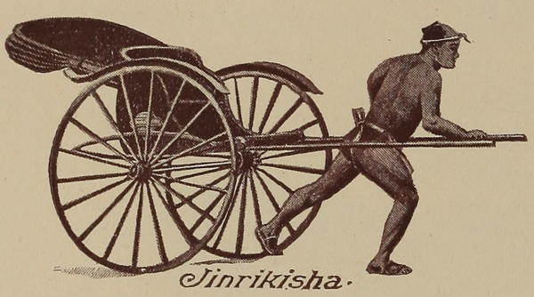

“Jinrikisha”
Japan As We Saw It (Gardiner) (1892)
The first thing which strikes one on landing [in Yokohama] is the jinrikisha, the conveyance of the country, which is a seat placed on wheels, and drawn by one or, for longer distances, two men, who run along, sometimes going as much as seven miles an hour. It is comfortable, though for my part I do not like turning men into cattle.
A Visit to Japan, China, and India (1877)
Universal as jinrikishas now are even in parts of Japan where foreigners are unknown, they are of very recent introduction, and seven years ago were unheard of.
A Visit to Japan, China, and India (1877)
There are no cabs to be seen, but instead is the jinrikisha, an exaggerated type of the old-fashioned baby carriage, drawn by men. This mode of locomotion does not promise much to one who has planned to see Japan. It may answer the purpose about the streets of a city, he reasons, but not for long distances in the country. A little experience, however, will show him his mistake. There is no more pleasant and certainly no more novel way of passing from town to town, and inspecting the work of the farmer and the life of the rural population, than in a jinrikisha, propelled by a pair of sturdy coolies. One takes his place between the shafts, and the other leads with a rope over his shoulder, and away they go, up hill and down dale and along the level plain, scarcely breaking their trot except at steep grades, and only asking a few moments now and then at a tea-house by the way, for a bowl of rice and a cup of their national beverage.
For relief the two will change places before the carriage; sometimes the second man goes behind and pushes in lieu of pulling, and occasionally, when the road is smooth, one draws the vehicle, while the other runs alongside waiting his turn in the harness.
From Japan to Granada (1889)
As to the jin-ricsha coolies, I found it well to acquaint myself with the regular tariff fixed for their services. If you hand one of them the exact amount to which he is entitled, he accepts it gratefully. If you give him more, he presumes on a foreigner’s ignorance and insists that he is underpaid. It is only when you have come to know your man that you can safely indulge your good nature by giving him, in addition to his fee, a pourboire. That the jin-ricsha coolies deserve better pay than they usually get for their work is beyond question. The Japanese, however, manage to get more for their money than we foreigners do, for I have often seen husband, wife and child crowded into one jin-ricsha.
Jottings of Travel in China and Japan (1888)
Tokio is a city of magnificent distances, and the jinrikisha has been in great request. Of all methods of conveyance this is the most convenient. Riding at full speed, you can draw up in an instant, and that by a word. My karuma-man is a stout, comical-looking fellow, good natured and willing, and as strong as a horse. Besides a blue shirt, he wears only a pair of cotton drawers ending above the knee, and a blue handkerchief twisted or knotted round his head. Turning corners, his deep guttural “hei! hei!” sends all foot-passengers scattering to the side of the road, along which he rushes at full speed. We seem constantly in danger of collision with other jinrikishas of the same kind, but nothing of the sort happens; perhaps even horses would be careful if they owned the carriages to which they are attached. These jinrikishas or karumas appear to be used by all classes. Sometimes one would imagine that even beggars are riding, only in this country bare legs are no certain sign of poverty.
Rambles Through Japan Without a Guide (1892)
A first ride in a jinriksha—it is a pleasure never to be forgotten! The return to a perambulator—for such it truly is—brings an almost childish sense of enjoyment, and when you substitute carriage shafts for the front wheel, and a small merry-faced Japanese for an English nursery-maid, the illusion is complete! The men were dressed in dark blue cotton and wore big mushroom hats; they splashed gaily in and out of the puddles, and, as they hurried round the corners, uttered sharp cries of warning to the foot-passengers and other jinriksha men in the way.
Japan As We Saw It (Bickersteth) (1893)
The return journey [from Chuzenji to Nikko] was very exciting. We dashed down the sharp zigzag path into the valley, our men having certainly no pity for ladies’ nerves! One acted as a drag, and the other, rushing ahead, pulled with all his might, as if about to throw himself, his light machine, and its occupant, over the edge of the precipice. But, no! Just as we drew breath in preparation for the impending accident, they slowed down to a trot that exactly swung us round the dangerous curve, and I, who was in front, had the enjoyment of watching how my next neighbour endured each ordeal, until by a final rush we were again in the valley, and could watch our panting runners as they washed their hands and faces in a little mountain stream before taking us down the long winding road to Nikko. (N.B.—Jinriksha men are, or should be, strict teetotalers, as they find stimulants shorten their lives.)
Japan As We Saw It (Bickersteth) (1893)
We were up again early, and started in jinrikshas by 8.30 for Lake Biwa, and the town of Otsu, where the Czarevitch was attacked last spring. We had again a very interesting ride along the high road for some seven miles—passing every class of peasant, and seeing every feature of their life. Jinriksha riding is rather unsociable work, as the men insist on following each other in as strict procession as the Noah’s Ark animals of one’s childhood, and it is therefore very difficult to carry on a conversation. But they are most courteous in their care of their customers, always ready to tuck you up in their scarlet rugs, or to describe the scenery in the most fluent of Japanese, and only laughing merrily when you cannot understand a word of what they have said. Every few miles they stop at a tea-house for a tiny cup of tea, or water, or crushed ice, and a smoke. Their heaviest meal is not taken until they reach their destination, and consists of rice with a little curry, or a chestnut or two—beside which an English dinner would look truly formidable. If any member of the party walks for a while, the men in charge of the vacant jinriksha invariably run to the help of their neighbours instead of taking a rest themselves, and all through the longest journey they will chatter and laugh—even up a hilly road that would ruin the lungs of an Englishman.
Japan As We Saw It (Bickersteth) (1893)
Truly the jinriksha runners of Japan are a wonderful race. All the heavy work comes on their legs and chests, which are splendidly developed; but their arms are, as a rule, very thin and small. We were told there were no less than 30,000 of them in Tokyo alone; and the trade seems a popular one all over the country. One man, a Christian convert, pulled my brother in a jinriksha for about thirty miles, and when asked if he were tired, said, “No, by the grace of God I am never tired,” and went on cheerfully for another ten miles. When running with a party they almost invariably insist on following one behind the other, the heaviest person being put first, so as to regulate the speed, with due regard to the strength of the men. But one day when we were a party of five, journeying along a broad high-road, our men suddenly ran abreast of each other, laughing and joking in the most comical fashion, though the road led up a long, heavy hill.
Japan As We Saw It (Bickersteth) (1893)
It is a humiliating fact to relate, but out of our pleasant party of five, three are light weights, while the Major and I weigh about 29 stone between us, and stand over six feet in height. On emerging every morning from the hotel, the thirty or so coolie men crowd round and courteously invite the “lighter weights” to take seat in their “rickshas,” while we two are left in the cold, and have to seat ourselves in the nearest vacant ones in the most ignominious manner.
Impressions of a Journey Round the World (1897)
◀ Kago/norimonoRailways ▶